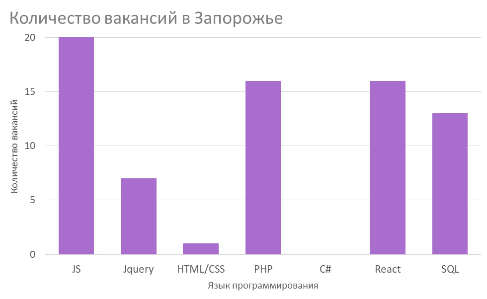

Веб-разработчик
Веб-разработчик — специалист, который создаёт новые и поддерживает уже существующие сайты. Чаще всего веб-разработчик работает в команде с дизайнером, тестировщиком и менеджером. Также он может работать как над внешним видом сайта, так и над его внутренней, серверной частью. Тестирование — хоть и не основная, но тоже одна из задач веб-программирования.
Интернет-банки, социальные сети и маркетплейсы — это тоже сайты, только с более сложной структурой и функциональностью. Из-за этого их называют веб-приложениями, но разрабатывает и поддерживает эти сервисы всё тот же веб-разработчик.

История специальности

История профессии веб-разработчика не такая уж и старая и берет свое начало в 90-ч годах прошлого столетия. Тогда интернет не был таким распространенным - требовался нрафический интерфес. В 1989 году Тим Бернерс-Ли изложил свою концепцию компьютерной платформы, что призвело к появлению в 1990 году языка гипертекстовой разметки - HTML.
Первые сайты не пользовались популярностью, поэтому веб-разработчики не был востребованы. Однако интернет, со временем, стал появляться в каждом доме. Именно в тот момент веб-разработчики стали быть востребованными. Для того чтобы сайты стали более презентабельными необходимо было усовершенствовать HTML,техники и технологии создания сайтов.
Сейчас веб-разработчик это одна с самый востребованных профессий в мире. Это связано с несколькими причинами.Во-первых, сегодня каждый второй имеет доступ в интернет и поэтому очень важно удовлетворить каждого. Во-вторых, интеренет-индустрия находится на пике своей популярности и пока нет ей замены. А в-третих, опытных веб-разработчиков очень мало и поэтому в основном они находятся в крупных корпорациях.
Напрямки у веб-розробці
В области веб-разработки существует три направления:- Backend-разработчик — специалист, который работает с внутренними частями сайта: пишет код на различных языках, отвечает за бесперебойную работу сайта, организацию технических процессов и базу данных. Разработчик по бек-энду использует следующий инструментарий: разные языки программирования (PHP, Perl, Java, Python, Ruby), фреймворки (Kohana, Codeigniter, Yii), а также MySQL для сбережения данных.
- Frontend-разработчик — специалист, который работает над визуальной стороной сайта. Он переводит дизайн-проект в код, чтобы внешняя сторона сайта корректно функционировала и везде отображались правильно картинки. Его основные инструменты – CSS, HTML, JavaScript. Этот перечень дополняется еще целым перечнем программ, предназначенных для улучшения работы сайта: Bootstrap, jQuery, AngularJS, LESS, Sass/SCSS и др.
- Fullstack-разработчик — профессионал, который умеет выполнять задачи backend и frontend-разработчика. Таких мастеров достаточно мало, потому что очень тяжело освоить весь спектр знаний.
Навыки и Умения frontend-разработчика
- soft skills
- Креативность
- Умение убеждать
- Умение работать в команде
- Адаптивность
- Тайм-менеджмент
- hard skills
- Умение писать понятный код
- Математические знания
- Умение искать информацию в поисковых системах
- Уверенные знания стандартных библиотек, необходимых фреймворков и инструментов
- Знания нескольких языков программирования
Популярные языки и технологии для frontend-разработки
На сегодня существуют множество языков программирования и их производных, однако есть языки которые более востребованы за другие
- HTML - аббревиатура языка разметки гипертекста – это язык программирования для создания электронных документов, называемых страницами, размещаемыми в Интернете. Каждая страница имеет несколько подключений к гиперссылкам или ссылкам на другие страницы.
- CSS - это язык программирования, используемый для описания того, как документы должны выглядеть с точки зрения макета и стиля. Под документом обычно понимается структура текстового файла, использующая язык разметки, такой как широко распространенный HTML и другие, например XML или SVG.
- React - это язык программирования, разработанный Facebook для создания быстрых и передовых пользовательских веб-интерфейсов. В настоящее время это одна из наиболее широко используемых библиотек JavaScript для создания веб-интерфейсов. Язык программирования React подходит для создания визуальных пользовательских интерфейсов и визуализации данных для браузеров.
- JavaScript - это популярный язык программирования, позволяющий пользователям реализовывать сложные функции на веб-страницах.Он может быть задействован в любой момент, когда страница выполняет динамическое действие, например, показывает периодическое обновление контента, анимированную двухмерную и трехмерную графику, интерактивные карты, видеовставки и многое другое.
- PHP - это универсальный язык программирования, который прост в использовании. Он отлично работает с большим количеством баз данных и операционных систем. Современные фреймворки, массивная база кода и активное сообщество PHP- все эти факторы обеспечивают непрерывную эволюцию PHP.
Плюсы и минусы професии

-
Преимущества
- 1. Незаменимые профи
- 2. Высокий уровень жизни
- 3. Плацдарм для развития
- 4. Профессия будущего
- 5. Возможность стать специалистом в молодом возрасте
-
Недостатки
- 1. Сидячая работа
- 2. Постоянная учеба
Сколько получают веб-разработчики?
Indeed, Payscale, Glassdoor приводят кардинально отличающиеся цифры средней средней заработной платы разработчиков разных специализаций и уровней занятости на рынке США. Сумма колеблется от $44 до $75 тысяч( в Украине от 15к грн до 50к грн). Данные Statista указывают на прямую зависимость уровня оплата труда и местоположения.
Уровни специалистов:- Junior - начинающий программист, который знает базовые вещи и понимает принципы работы своего инструмента. Даже если вы только недавно начали изучать программирование, то уже можете претендовать на звание джуна – в худшем случае это будет вакансия стажера, что неплохо для начала.
- Middle - это разработчик понимает свою зону ответственности и способен самостоятельно принимать решения по реализации в рамках своей компетенции. Ему не нужно разжёвывать задачу, приводить подробную декомпозицию. И он понимает рабочие процессы внутри компании.
- Senior - это гвоздь программы, способный взять на себя проект и даже руководить отдельным подразделением. Senior Developer обладает обширным багажом знаний, способен стать ментором для Trainee или Junior разработчика, а также улучшать эффективность команды за счёт реализации своих идей.
Перспективы профессии

-
Искусственный интеллект
За «разумными» технологиями будущее всего мира. Это отображается в любой сфере уже несколько десятков лет. Как только физическая сила начала заменяться роботами, величайшие умы приступили к работе над полной автоматизацией наших жизней. Кроме того, в любой веб разработке важно именно графическая составляющая. Свежие тренды и креативные идеи смотрите в следующем коротком видео. -
Активный переход бизнеса в онлайн
Сегодня многие бизнесы для расширения осваивают виртуальную среду, однако опытных специолистов очень мало.